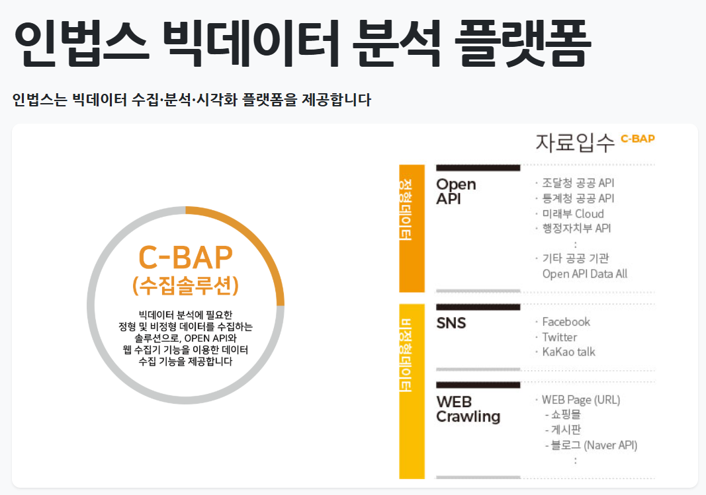
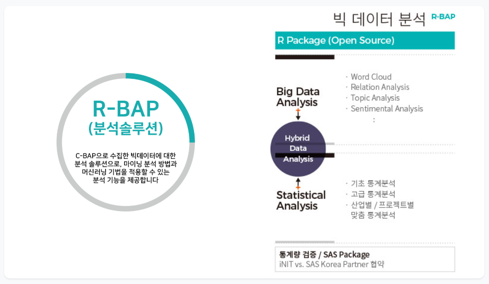
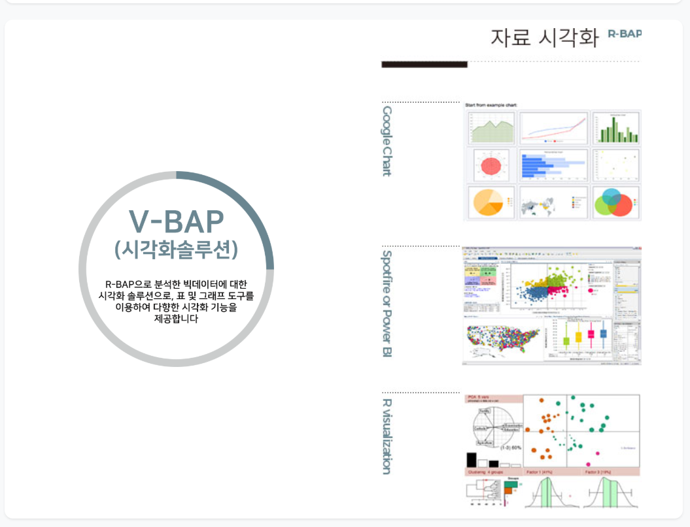

데이터 전략 & 통계 컨설팅
비즈니스 목적에 최적화된 데이터 활용 전략 수립부터 정밀한 통계 설계까지, 기업의 미래 방향성을 제시합니다. 시장의 흐름을 읽는 수요 예측과 맞춤형 통계 알고리즘을 통해 의사결정의 확실성을 높입니다.
DATA INTELLIGENCE
㈜인아이티는 탁월한 통계 전문성과 정밀한 빅데이터 분석, 지능형 AI를 융합하여 데이터 속 숨겨진 미래 가치를 도출합니다. 사람과 기술의 완벽한 조화로, 최적의 선택과 가치 있는 변화를 리드합니다.
서비스
데이터 전략부터 엔지니어링·품질, AI·통계 분석과 의사결정 시스템 구축·운영까지 연결해 제공합니다.
비즈니스 목적에 최적화된 데이터 활용 전략 수립부터 정밀한 통계 설계까지, 기업의 미래 방향성을 제시합니다. 시장의 흐름을 읽는 수요 예측과 맞춤형 통계 알고리즘을 통해 의사결정의 확실성을 높입니다.
흩어져 있는 고차원 데이터를 유기적으로 수집·통합하고, 비즈니스 성장의 기반이 될 정밀한 데이터 모델을 설계합니다. 엄격한 품질 기준 설정과 투명한 변경 이력 관리를 통해 데이터의 신뢰성과 안전성을 보장합니다.
첨단 통계 기법과 머신러닝 알고리즘을 활용해 데이터 속에 숨겨진 핵심 패턴과 유의미한 관계성을 도출합니다. 검증된 예측 모델을 기반으로 실제 업무 프로세스에 바로 적용 가능한 실전형 인사이트를 제공합니다.
정교한 분석 결과를 직관적인 데이터 대시보드와 엔터프라이즈 업무 시스템으로 완벽히 구현합니다. 철저한 권한 제어, 체계적인 이력 관리, 그리고 끊김 없는 모니터링을 통해 안전하고 지속 가능한 지능형 운영 환경을 지원합니다.
솔루션
근거 있는 판단, 일관된 조사 운영, 데이터 신뢰성 확보까지. 세 가지 솔루션을 인법스·인서베이원·인에디타원으로 구현하고 고객의 사업분야에 맞게 연결합니다.
C-BAP 수집, R-BAP 분석, V-BAP 시각화를 연결해 흩어진 데이터를 비교·탐색 가능한 의사결정 정보로 전환합니다.
공공 정책 지표, 금융 분석, 스마트 제조·시장 동향을 업무별 대시보드와 분석 흐름으로 연결합니다.

API·웹·SNS 수집

통계·텍스트·관계 분석

차트·BI·업무 화면
문항 설계부터 배포 준비, 응답 현황과 원자료 관리, 결과 보고서까지 하나의 작업공간에서 운영합니다.
공공 수요·만족도 조사, 연구·정책 조사, 기업의 고객·시장조사를 일관된 운영 흐름으로 관리합니다.

데이터의 구조와 관계에서 품질 규칙 후보를 발굴하고, 담당자 검토·오류 보정·운영 반영 이력을 연결합니다.
공공·행정의 통계 품질, 금융 데이터 정합성, R&D·정책의 연구 데이터 검증에 적용합니다.

사업분야
국가 공식 통계의 안정적 생산부터 금융 데이터 기반의 최적 의사결정, 시장 다변화 예측 및 정책 시뮬레이션까지, 각 도메인의 목적과 데이터 속성에 최적화된 방법론을 연결합니다.
국가 통계의 높은 재현성과 신뢰성을 확보하고, 부처 간 행정 데이터의 안전한 연계 및 중장기적 거버넌스 체계를 구축합니다.
규제 준수(Compliance)와 보안이 핵심인 금융 데이터를 바탕으로, 근거 중심의 복합 판단 알고리즘과 검증 프로세스를 제공합니다.
단순 예측을 넘어 공정과 시장 변화에 영향을 미치는 핵심 요인(X-Factor)을 추적하고 데이터 간의 상관관계를 다각도로 진단합니다.
정책 목표 및 학술 연구에 정렬된 데이터 스키마를 설계하고, 이를 효과적으로 검증·활용할 수 있는 디지털 R&D 인프라를 조성합니다.